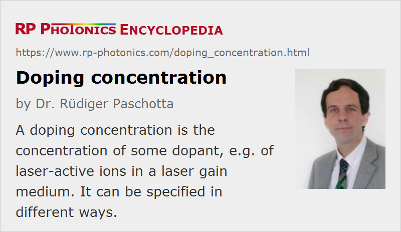

Doping Concentration
Definition: the concentration of some dopant, e.g. of laser-active ions in a laser gain medium
German: Dotierungskonzentration
Categories: optical materials, lasers
Formula symbol: Ndop
Units: %, m−3
How to cite the article; suggest additional literature
Author: Dr. Rüdiger Paschotta
An important parameter of a laser gain medium such as a rare-earth-doped laser crystal or glass (possibly in the form of a fiber), is the doping concentration. The doping concentration can be specified in different ways:
- the molar (atomic) percentage of the dopant (“at. %” or “% at.”), also often specified in molar ppm (parts per million)
- the percentage by weight (or mass) of the dopant, also often specified in ppm wt. (parts per million with respect to weight)
- the number density N of the laser-active ions, i.e., the number of ions per cubic meter or cubic centimeter
These are discussed more in detail in the following.
Number Density
The number density N (in units of m−3) is useful for many calculations. In particular, combined with cross-section data it makes it easy to calculate absorption and gain coefficients (see below). It is also a type of specification which leaves no room for ambiguities.
Molar Percentage
The molar (or atomic) percentage e.g. of neodymium ions in Nd:YAG (Nd3+:Y3Al5O12) is the fraction of yttrium (Y3+) ions which have been replaced with Nd3+ ions. It is important to take into account that each garnet unit Y3Al5O12 contains three yttrium ions, so that in principle up to three neodymium ions could be incorporated. For the conversion between molar percentage and number density, the volume of one Y3Al5O12 unit needs to be known, or alternatively the mass density (here: 4.55 g/cm3), the chemical formula and the atomic masses. For the case of Nd:YAG, the number density of neodymium ions for a 1 at. % doping level can be calculated as
The denominator is the mass of the Y3Al5O12 unit, calculated from the relative atomic masses and the atomic mass unit (which is close to the proton mass). The inherent assumption is that the average size of the unit cell is not modified by the doping; this is a reasonable approximation as long as the doping concentration is low.
For Nd:YVO4, the calculation is slightly different, because only a single neodymium ion can occupy a YVO4 unit:
Nevertheless, the resulting number densities are similar, because the larger number of Nd3+ ions per unit in YAG is offset by the larger volume of that unit.
Fraction of Weight
The fraction of weight (specified in “% wt.” = weight percent or in “ppm wt.”) is easily understood in principle, but it should be made clear exactly which weight is counted. For example, if a laser glass is doped with neodymium oxide (Nd2O3), either the weight of the neodymium only or the weight of the oxide may be specified. If the weight of the neodymium only is taken, mass percentages of 0.73% for Nd:YAG and 0.71% for Nd:YVO4, respectively, are obtained, again assuming an atomic doping density of 1%. Weight fractions are most popular in the context of glass materials, including fibers, and then often count the weight of whole compounds rather than of the laser-active ions only.
Obviously, if one specifies a percentage (or similarly a ppm value) without saying whether it means molar (atomic) percent or percentage by weight, it is not clear what the number means. Unfortunately, this is very frequently done by crystal or fiber suppliers and also in the scientific literature. In most but not all cases, percentage numbers then refer to atomic percent, and ppm are probably more often ppm of weight. Another frequently encountered problem is the specification by weight fractions without saying what exactly is counted (see above).
Importance of Dopant Concentration in Laser Gain Media
The doping concentration of a laser gain medium is a very important parameter, as it has an impact on different phenomena:
- It determines the (unbleached) absorption coefficient α for the pump wave (assuming optical pumping) according to α = N σabs. Similarly, the gain coefficient (in 1/m) is g = n2 N σem, where n2 is the achievable fraction of excitation and a four-level gain medium is assumed. (In case of optical fibers and other waveguides, there is an additional overlap factor, describing the partial overlap of the light field with the doped region.)
- High doping densities often lead to quenching of the upper-state lifetime. This can result from energy transfer between ions, which can be strongly enhanced by clustering of ions (the extent of which can depend on the fabrication conditions). Apart from the average doping density and the homogeneity of the dopant distribution, an important parameter for energy transfers is the number density for 100% doping, which is related to the size of the unit cell: there are crystalline media with a large distance between laser-active dopants (even if these are located in adjacent unit cells), so that energy transfer processes are weak.
- High doping densities also increase the dissipated power per unit volume and may thus increase the temperature (possibly reducing the laser efficiency) and the temperature gradients, and also their effects such as mechanical stress and thermal lensing. However, this is not always true; for thin-disk lasers, for example, higher doping allows the use of a thinner disk, which can be more efficiently cooled.
Typical doping concentrations of rare-earth-doped bulk crystals are between 0.1 at % and 3 at. %. There are some special cases where much higher doping concentrations, in principle up to 100 at. %, are possible without strong quenching effects. An example of this is the tungstate Yb:KYW = Yb:KY(WO4)2, which actually becomes KYbW = Yb:KYb(WO4)2 for 100% ytterbium doping. It is not clear, however, to what extent such high doping concentrations can be utilized with advantages for laser design.
Rare-earth-doped fibers typically have doping densities between a few hundred and several thousand ppm wt., i.e., in most cases somewhat lower than for typical laser crystals. Limits are usually set by the tendency for quenching at higher doping concentrations, rarely by the acceptable heat generation per unit length. The combination of a limited doping concentration with the typically low transition cross sections of glass materials limits the gain per unit length. Nevertheless, the overall gain can be large due to the typically long length. The limitation by quenching is more severe for erbium-doped fibers (particularly with silicate glasses) than for, e.g., ytterbium-doped fibers.
The doping concentration is often not spatially constant, particularly in fibers. For example, fibers made in an MCVD process often exhibit a dip of the doping concentration along the fiber axis. Calculations e.g. of the amplifier gain and saturation power are often based on the simplifying assumption of a constant doping concentration throughout the fiber core, even when this is actually not realistic.
Questions and Comments from Users
Here you can submit questions and comments. As far as they get accepted by the author, they will appear above this paragraph together with the author’s answer. The author will decide on acceptance based on certain criteria. Essentially, the issue must be of sufficiently broad interest.
Please do not enter personal data here; we would otherwise delete it soon. (See also our privacy declaration.) If you wish to receive personal feedback or consultancy from the author, please contact him e.g. via e-mail.
By submitting the information, you give your consent to the potential publication of your inputs on our website according to our rules. (If you later retract your consent, we will delete those inputs.) As your inputs are first reviewed by the author, they may be published with some delay.
See also: laser crystals, gain media, transition cross sections, quenching, energy transfer, The Photonics Spotlight 2006-07-01c
and other articles in the categories optical materials, lasers

This encyclopedia is authored by Dr. Rüdiger Paschotta, the founder and executive of RP Photonics Consulting GmbH. How about a tailored training course from this distinguished expert at your location? Contact RP Photonics to find out how his technical consulting services (e.g. product designs, problem solving, independent evaluations, training) and software could become very valuable for your business!
|  |
If you like this page, please share the link with your friends and colleagues, e.g. via social media:
These sharing buttons are implemented in a privacy-friendly way!